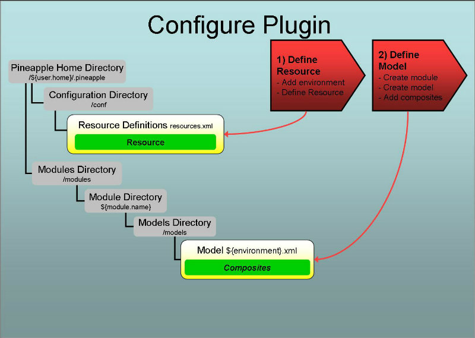

Introduction
Overview
Invoking the plugin
The plugin is invoked by the core component when the core component is used by one of the Pineapple clients. To trigger invocation by the core component the plugin needs to be configured.
Configuration
Two steps are needed to configure the plugin:
- Define resource: Define resource which enables usage of the the plugin. The resource enables usage by definition of a mapping between the resource ID (e.g. some user defined key referenced from models) and the plugin ID (e.g. the Java package name which implements the plugin: com.alpha.pineapple.plugin.composite.execution). Please notice: if you use Pineapple with the default configuration then this step isn't required since the composite execution plugin will be configured for usage in all environments out-of-the-box.
- Define the module model and add content to the model by defining a list of composite modules. The composite modules are executed in sequence when the plugin is invoked with the model. The model is defined using the The composite execution plugin schema.
For more info about configuration of plugins:
- For info about resources and credentials read the Environment configuration document.
- For info about modules and module models read the Modules configuration document.
Execution of an operation
When the plugin is invoked with an operation (e.g. deploy-configuration) and a module model which defines a list of composite modules then the plugin will:
- Iterate over the list of composite modules and for each:
- Invoke the module with same operation (e.g. deploy-configuration) and environment that the composite execution plugin was invoked with.
Define resource
The purpose of defining a resource for this plugin is to define a mapping between the resource ID and the plugin ID. The resource ID is the user defined key which is referenced from module models which are targeting the resource. The plugin ID is the Java package name which implements the plugin: com.alpha.pineapple.plugin.composite.execution.
Considerations for defining resources for this plugin
The purpose of this plugin is to increase the general usability of Pineapple versus most of the other plugins whose purpose are to manage or test IT resources. The next section will illustrate the generic way of configuring the plugin, but considering the purpose, the generic way isn't the ideal way to configure the plugin. The ideal way to configure the plugin is to define it in the wild card environment. This will enable its functionality for all environments. This way of configuring the plugin will be described at the end of the section.
Generic configuration of the plugin
To define a new resource, add a resource element to the target environment in the configuration file ${pineapple.home.dir}/conf/resources.xml:
<?xml version="1.0" encoding="UTF-8"?>
<configuration xmlns="http://pineapple.dev.java.net/ns/environment_1_0"
xmlns:xsi="http://www.w3.org/2001/XMLSchema-instance">
<environments>
<environment id="local-environment" >
<resources>
<resource id="composite-execution" plugin-id="com.alpha.pineapple.plugin.composite.execution" />
</resources>
</environment>
</environments>
</configuration>
For all the details about configuration of environments and resources, please visit the Environment Configuration Reference.
The semantics of the resource element is:
The id attribute
Identifies the resource uniquely in the current environment. This ID is referenced from models which intends to use the plugin.
The plugin-id element
The plugin ID defines the name of the Java package which implements the plugin. The plugin ID for this plugin is: com.alpha.pineapple.plugin.composite.execution.
Ideal configuration of the plugin
Since the plugin provides general functionality for Pineapple it should be configured for usage in all environments. To avoid configuring it for every single environment, define it once in the wild card environment (e.g. "*") :
<?xml version="1.0" encoding="UTF-8"?>
<configuration xmlns="http://pineapple.dev.java.net/ns/environment_1_0"
xmlns:xsi="http://www.w3.org/2001/XMLSchema-instance">
<environments>
<environment id="*" >
<resources>
<resource id="composite-execution" plugin-id="com.alpha.pineapple.plugin.composite.execution" />
</resources>
</environment>
</environments>
</configuration>
Then the plugin is ready to be used from any models which targets any environment. Models can use the plugin with the target-resource name composite-execution.
Define the module model

A module defines the input used by Pineapple to execute operations. A module is defined by a directory layout. Part of a module is the model(s) which defines what happens when the module is invoked. A model is put together by one or more sub models from different plugins. Each plugin defines its own schema for its particular model
The composite execution plugin schema
This plugin defines a schema named The composite execution plugin schema which defines the http://pineapple.dev.java.net/ns/plugin/composite_execution_1_0 namespace. For more information about where the schema can be found, refer to the Schema locations for plugins page.
Name and location of the the module model file
The list of composite models which should be executed when the plugin is invoked are defined in the module model files which are located at ${module-dir}/models/${environment}.xml where:
- ${module-dir} is the module root directory which identifies the module with a unique name and version.
- ${environment}.xml is a module model file for a target environment, with ${environment} substituted with the environment name, e.g. local-environment.xml for an environment named local-environment.
If the model file doesn't exist for an environment where the composite execution should be run, then create the model file and name it after the target environment, e.g. local-environment.xml for an environment named local-environment.
Even if the plugin is configured in wild card environment, then a specific name for the model is required. The wild card environment can't be used as a target environment. Consider it a meta environment from which all other environments inherits resource configurations.
The module model configuration schema
Module model files are defined using the module model configuration schema which defines the http://pineapple.dev.java.net/ns/module_model_1_0 namespace. Since module model files contain elements from multiple namespace all the elements and attributes should be qualified. The header and root element should be defined as (look in the Modules configuration document for more details):
This example shows definition of the minimal model file for local-environment:
<?xml version="1.0" encoding="UTF-8"?> <mmd:models xmlns:xs="http://www.w3.org/2001/XMLSchema-instance" xmlns:mmd="http://pineapple.dev.java.net/ns/module_model_1_0" />
Adding the plugin schema to the model
The next step is to include the The composite execution plugin schema to get access to the entities defined by the schema:
<?xml version="1.0" encoding="UTF-8"?> <mmd:models xmlns:xs="http://www.w3.org/2001/XMLSchema-instance" xmlns:mmd="http://pineapple.dev.java.net/ns/module_model_1_0" xmlns:cep="http://pineapple.dev.java.net/ns/plugin/composite_execution_1_0" />
Now we have a minimal module model file with three namespaces:
- xs: The basic XMLSchema schema which is only used in the root element of the document.
- mmd: The module model schema which is used to define the skeleton of a model file.
- cep: The composite execution plugin schema which is used to define composite executions of Pineapple modules.
Defining the model which targets resources
Add a new model with a target-resource attribute. The value of the target-resource should match the id of the resource which was defined previously in the section Define resource, e.g. composite-execution:
<?xml version="1.0" encoding="UTF-8"?>
<mmd:models xmlns:xs="http://www.w3.org/2001/XMLSchema-instance"
xmlns:mmd="http://pineapple.dev.java.net/ns/module_model_1_0"
xmlns:cep="http://pineapple.dev.java.net/ns/plugin/composite_execution_1_0" />
<mmd:model target-resource="composite-execution">
<mmd:content />
</mmd:model>
</mmd:models>
Add content to the model which uses the plugin through the composite-execution reference:
<?xml version="1.0" encoding="UTF-8"?>
<mmd:models xmlns:xs="http://www.w3.org/2001/XMLSchema-instance"
xmlns:mmd="http://pineapple.dev.java.net/ns/module_model_1_0"
xmlns:cep="http://pineapple.dev.java.net/ns/plugin/composite_execution_1_0" />
<mmd:model target-resource="composite-execution">
<mmd:content>
<cep:composite-execution>
</cep:composite-execution>
</mmd:content>
</mmd:model>
</mmd:models>
Define composite execution of modules in the module model
Define a sequence of composite modules which should be executed when Pineapple is invoked with the model:
<?xml version="1.0" encoding="UTF-8"?>
<mmd:models xmlns:xs="http://www.w3.org/2001/XMLSchema-instance"
xmlns:mmd="http://pineapple.dev.java.net/ns/module_model_1_0"
xmlns:cep="http://pineapple.dev.java.net/ns/plugin/composite_execution_1_0" />
<mmd:model target-resource="composite-execution">
<mmd:content>
<cep:composite-execution>
<cep:module name="100-ssh-configure-os-yum-centos64" />
<cep:module name="101-ssh-configure-os-linux64" />
</cep:composite-execution>
</mmd:content>
</mmd:model>
</mmd:models>
Adding composite modules
The modules added to the model are called composite modules since they define the parts in the greater whole.
The composite modules must be existing modules which reside in the same module directory as the composite execution module.
A composite module is added through the definition of a single element which defines the name of the composite: